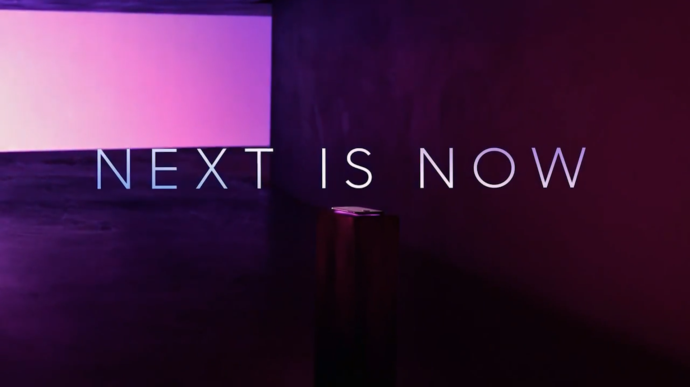

写在前面
我所爱的那个三星，始于 S6 ，终于 S10。
S10 到 20 的 “断崖式进步”，标志着两个时代的分割。从那年开始，S20 毫无美感的后摄布局、S21 的塑料后盖、S20、21、22 从曲到平的屏幕、跟风式的大小旗舰、消失的 Note 产品线，历史的倒车似乎在不断地提醒着我，高东真的时代不在了。
可幸的是，S8 曾经的辉煌还在我们身边触手可及。
这是一个迟来的评测，以此纪念陪伴我高中三年的 Galaxy S8。
这篇图文有一个内容相同的 23 分钟视频版本，欢迎观看，链接如下：
视频版本
引入
这是我印象中最深的一个S8广告片，“Unbox Your Phone”的广告语深入我心。
“Unbox your phone.”
2017年，Galaxy S8 就这么来了。全面屏的时代就这么来了。
我不知道还有没有人记得 S6 edge 广告词中的那一句“让未来现在就来”

“让未来，现在就来”
打动我的着实是科技的美感。
7年前曲面屏就被三星玩的很花
那时的 S6 edge 就已经把曲面屏的美学功能发挥到了极致，让我印象深刻的是，第一次见到 S6 edge 放在桌子上时，电话铃声响起，屏幕两侧亮起的光带从弯曲的屏幕边缘发散，倒映在桌面上，随着铃声流动起伏。
于我而言，曲面屏似乎总有一种精致感，我不清楚是这种感受是否是和 Galaxy 绑定的，但在这样的主观感受的影响下，三年前，我买了一台 S8；三年后，一台 S22 到手。
S8 与 S22
钉子户
我不敢自称 S8 钉子户，在相伴 3 年后，今天 6 月她已经退居二线了。
网络上“钉子户”一词的兴起，最初是源于一句对发布 4 年后依然坚挺的小米 6 的调侃。由于骁龙 835 优秀的功耗表现，还有当年小米还算不错的 MIUI 和极度丰富的第三方刷机资源，换一块新电池，小米 6 在很长一段时间内还能保持比较流畅可用、续航良好的状态。
尽管依然有很多人自称 S8 钉子户，但同为骁龙 835 的 S8 命运却与小米 6 不尽相同了。A73 核心原本的 2.45 GHz 的最高主频被限制在了 2.35GHz、仅仅 3000 mAh 的电池和一块 5.8 吋的 AMOLED 耗电大户都使其性能和续航表现不如人意。S8 还有 Exynos 版本，但在实际体验上与骁龙版本差别并不大。
续航感人
而第三方刷机资源的匮乏，骁龙版的 S8 刷上 TWRP、刷上 Magisk 就玩算到头了。
在 2017 年她的表现并不算差，但在今天，亮屏续航不足 3 小时、运行国产 APP 卡顿缓慢，名噪一时的 S8 显然该退役了。
抛开那些不谈，直至今天，S8 在一些方面仍然“先于时代”。
继承自 Note7 的虹膜识别很有科技感，摘下眼镜后解锁速度还是相当快的。
传统的心率/血氧饱和度传感器依然保留，除了简单的健康监测，还可以自拍的时候当快门用。
心率/血氧饱和度传感器
用来当自拍快门
三星一贯的按压式 Home 键其实并没有取消，只是做成了屏幕压感，按下时有模拟的振动，虽然效果一般吧。
对于那些苛刻要求，要说没有双扬声器，刷个模块上去就有了嘛；没有高刷新率屏幕，有 2K HDR “全视曲面屏”还想要啥；没有线性马达……其实是有的…
2K HDR
早在魅族把高素质的振动马达介绍到业界之前，三星就已经“先于时代”地用上了振动清脆的 Z 轴线性马达。Z 轴马达的运动径向是垂直于手机屏幕的，所以当手机在口袋里或桌面上时，共振的作用使得振感强烈，也很响亮，然而从 S22 开始却换成了 X 轴马达，实在遗憾。
三星使用手册
有时一句调侃，就可能成了刻板印象或者先入为主的论调。One UI 真的不堪吗？
或许是的，设置列表内容繁琐复杂；导航栏按钮、主屏幕、通知面板、锁屏页面的自定义功能，都需要额外下载。
三星使用手册之 Good Lock
但话说回来，设置中的相关功能推荐，是 One UI 率先引进的；
设置中相关功能推荐
高级自定义功能需要下载，也是为了给一般用户更少繁杂、给极客用户更多自由。我习惯拿到新设备时先探索菜单、设置，但即使在使用 One UI 三年后，我还是不能详细知晓每一项设置功能；在 S22 上的 One UI 4.0中，还能发现有意思的新功能。
与其说繁杂不如说繁多；与其说细碎不如说细节。繁多的功能和细节，带给我的，更多的是拿到新设备一般的、探索未知功能的新鲜感。
抛开争议，One UI 并不完美，动画衔接的卡顿掉帧不少见、三星的自家广告时常会涌向通知栏、大陆版本本地化 App 设计缺少统一规范；但优秀的后台管理、恰到好处的本地化功能、与屏幕交相呼应的圆角半径，
还有 Bixby 姐姐贴心的提醒、动听的声音、每早轻柔缓和的起床铃声，都让人难以释怀。
恰到好处的圆角
稀烂的 UI
Bixby 姐姐！
2019 年，鸿蒙 OS 取代 EMUI、OPPO 迎来了 color OS 6的重塑；20年，VIVO 的 Origin OS 一改往昔，全面革新；21 年，一加也投入了 color OS 的怀抱。
在业界纷纷重视操作系统的浪潮来临前，三星敏锐地察觉到业界动向，在 2019 年的 S10 上首发了 One UI，并向旧机型 S8 推送 One UI 1.0 与 Android P 底层更新，至此，S8 成了 One UI 官方支持的最后一个 S 系列机型。
从 Android N 到 P，从 Samsung Experience 到 One UI，亦是体验进步，亦是卓识远见，亦是一局大棋。而 S8 有幸做了一枚棋子，见证了这个从落后到赶超的历史时刻。
印象派
这个 Tag 是我编的，其实是说相机。
2017 年，是三星入局多摄像头的第一年，但只是尝试性的在 Note 8 上搭载了第二颗长焦镜头，S 系列仍然是单摄。
2017 年，也是业界早期布局计算摄影的一年，三星、苹果、谷歌，都各自瞅准了一颗传感器，在接下来的几年持续优化算法。从 S7 用到 S10，这颗 1/2.55”、12MP 的 CMOS 也出现在 S8 的后置摄像头，稍加打磨，更名叫 IMX333。 光圈 f/1.7，等效焦段 26mm，录制最高4K 30fps 或 480p 240fps，比起后代 S9，少了 960fps 凝视拍摄和可变光圈。
Pixel 2 的主打相机功能
三星的相机算法，显然不如谷歌那样优秀，但 S8 是三星在计算摄影上积累技术经验的一个台阶，能从中看出今天 S 系列的影像调教风格。
在迅速进步的移动影像技术浪潮下，S8 早已远离“优秀”的队列：长焦缺失、视频掉帧、噪点感人、涂抹成了印象派作品。
这涂抹，这笔触，印象派了吧
但无论“夜视仪”级的暗光表现、迅速准确地全像素相位对焦还是稳定的光学防抖，至今也未必能全部成为标配；配上 GCam，也能与今天的不少中端手机一较高下。
当年的夜视仪
26mm，应该也算作“记忆中的焦段”了吧。至少我的 S8，为我留住了过去三年里，高中生涯的记忆……
温润如玉
视频开头说的那种精致感。S22 一脉相承，S8 亦一脉相承。
S22 一脉相承的精致感
当光线灵动地流转过顺滑的机身，从玻璃的正面流向自然弯曲的侧边，在那里挤压堆积；当光线越过平滑的铝合金中框，跃向玻璃的背面，又沿着同样弯曲的另一侧，在那一刻，迸发、喷渤。
说她“温润如玉”。像玉石的沉稳大气，挺过风雨，温和依旧；像美人迟暮，添了皱纹，气质还是那样迷人。铝合金或许挡不住伴我三年的汗水的侵蚀，大猩猩玻璃却耐得住一朝一夕岁月的寂寞。
中框掉漆了
说她“温润如玉”。每一条接缝，每一个圆角，每一个弧形都配合得天衣无缝、浑然一体。金属与玻璃的碰撞，如果说 S22 那样的，是硬朗挺拔，那么 S8 那样的，则是柔软圆滑。
S22 的硬朗挺拔
S8 的柔软圆滑
握在手中，稍施用力，便流畅地从正面反转到背面。
说她“温润如玉”，是美学上的匀称。平衡的重心，仅仅 158 g 的重量，68.1 mm 的宽度，8 mm 的厚度，拿在手上，轻盈而不失沉稳，匀称而不失一手掌握的安全感。
额头和下巴对应牢牢地将剔透的屏幕钳在其中，相机、指纹、闪光灯，不加约束，却井然有序，背面的元素沿着中心线对称平整地排列，前后两块曲率一致的热成型玻璃交相呼应，中框上的每一处注塑断点都安排得妥善而恰当，两侧略微互相错开而又排布均匀的按键，则在美学和实用的观点中找到了绝佳的平衡。
说她“温润如玉”。灯光的映衬下，曲面屏好像又多了几分玉石的晶莹、氤氲，而不失玻璃的清透、灵动。当屏幕中的内容渐渐滑出，在边缘随着屏幕的曲线自然地弯折卷动，随着指尖的移动，轻盈平静的滑离，直到隐没在屏幕和边框的缝隙里，仿佛随着机身流畅的曲面移到背面，平淡中又有些惊喜，惊艳又不失沉稳的周到和疏离。
5 年前，这块 1440p、Super AMOLED、5.8 吋的“全视曲面屏”足以惊叹业界；以当今的眼光看，570 ppi、HDR10、优秀的色准和均一的亮度，仍不失为一块优秀的屏幕，而屏幕压感、极高的像素密度，则写照着那个在简单中追究极致的三星。
谁还记得那年的手机长什么样儿呢？
同年的 iPhone7
前面有开创性的 Note edge，S6 edge 并不是三星第一款带有曲面屏的手机。前面有开创性的小米 MIX，S8 也并不是第一款搭载全面屏的手机。或许S8并不是那把划时代的利刃，但第一次看到S8宣传片的时侯，我脑瓜子嗡嗡的，有那么一刻，仿佛“未来，现在就来了！”
未来，现在就来了！
辉煌沉沦
2016 年，三星电子如期收购了哈曼国际和 QD Vison，本是事业蒸蒸日上的一年，但随着世界各地接连燃烧的电池，一同跌破的除了三星实现“世代一致”的愿景，还有韩国股市的一片红色。我还记得，2017 年的内存价格真的很贵。
视频记录的 Note7 起火事件
三星电子缩紧产能，内存大涨价
这其中当然有中国三星的作风问题，但 Note7 事件显然还是让 70% 的中国大陆用户拒绝了三星手机。
确实是我们中国三星
面对来自全球的信任危机和经济损失，三星电子显然寄希望于风口浪尖的下一代 S 旗舰，为她配备了超越时代的屏幕、传承自 Note7 的虹膜识别技术，更加安全的凝胶电池、延续至今的安全提醒。S8 是集大成者，她勇敢地立在岬角之巅，肩负为三星电子正名的重任，扛起行业的下个时代的担当。
她身上有记忆，有传承，有蜕变，有创新。铭记着疏忽大意造成的失败，警醒着后人；传承着家族式的精致、严谨、一丝不苟；大胆地将曲面屏立为标配，把 16：9 的屏幕带入历史；创新地 unbox，将科幻与现实拉近一大步，大刀阔斧地向着真“全面屏”的理想迈进。
S8 系列成功吗？中国三星步步缩减的市场份额指明着，在这个角度，显然不是；但站在历史的一面，或许是的。
这些年，耳机孔、2K 屏、曲面屏，正渐渐地从三星的产品线上消失，放弃了追求，放弃了信仰。
当曲面屏被奉为异端，当美学的匀称让位于所谓的手感，当没人记得那个腰圆形的主页键，当三星自己也认为 2K 屏幕是个浪费时，当 S8 的辉煌落幕时，一句“三丧”的谐音玩笑，是否成了现实？
S20 系列，应当叫做三星的耻辱机
这些年，他们显然忘了那年加班到深夜赶工 S8 的激情，显然忘了从谷底爬起的汗水和艰辛，忘了先辈对美学和设计的极致追求，也忘了那个正向未来阔步前行，用匠心创造的辉煌的时代。
今天，尽管她的荣光褪去，我依然会铭记她和他们曾经的辉煌；也永远感谢这个，她与 MIX、iPhone X 和众多追随者一起开创的，新时代。
新时代
可能这时候，就差一曲 Over the Horizon 2018 吧。
致 伴我三年的 Galaxy S8。
如有纰漏，敬请指正！